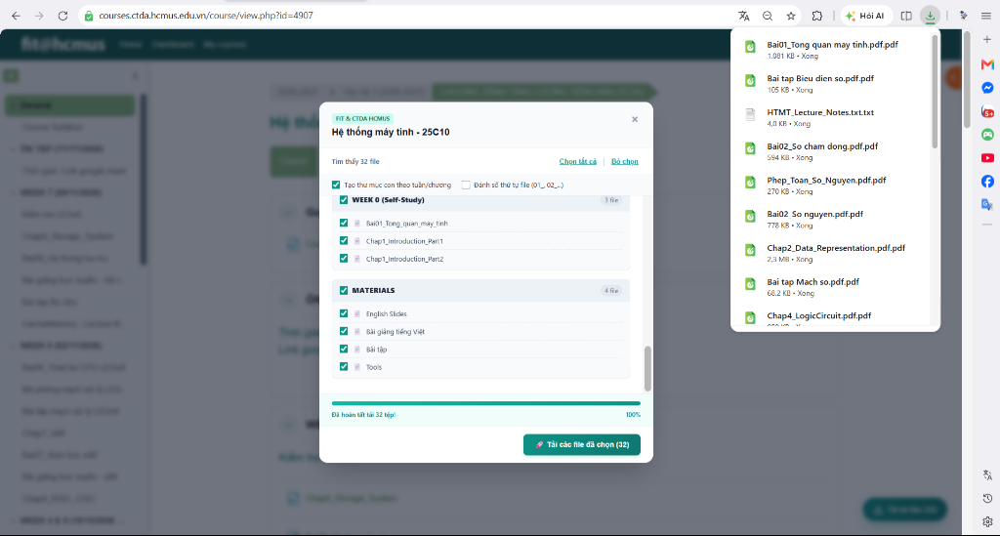

Tự động quét toàn bộ bài giảng, slide, đề thi trên khóa học Moodle và tải trực tiếp về máy tính chỉ với một thao tác.
Ctrl + Shift + B).

Chọn cách thức phù hợp nhất với nhu cầu sử dụng của bạn.
Không cần cài đặt tiện ích, không cần bật Developer Mode. Hoạt động trên mọi trình duyệt (Chrome, Edge, Brave, Cốc Cốc).
Ctrl + Shift + B).
Tự động xuất hiện nút bấm tải tài liệu ngay góc dưới màn hình khi bạn truy cập trang khóa học. Tự động gom file vào đúng thư mục môn học và các thư mục tuần/chương bên trong Downloads.
moodle-downloader-extension.zip và giải nén ra một thư mục.
chrome://extensions và bật công tắc Developer mode ở góc phải.
Tự động gửi yêu cầu tải liên tục cho toàn bộ tài liệu đã chọn mà không cần bấm thủ công từng file.
Chọn nhanh theo nhu cầu: chỉ lấy slide ôn thi lý thuyết, hoặc chỉ lấy bài tập / lab thực hành.
Bản Chrome Extension tự động tạo thư mục môn học và các thư mục con theo đúng từng tuần/chương, không bị lẫn vào file khác.
Sử dụng trực tiếp session đăng nhập Moodle sẵn có của bạn trên trình duyệt mà không cần cung cấp mật khẩu.